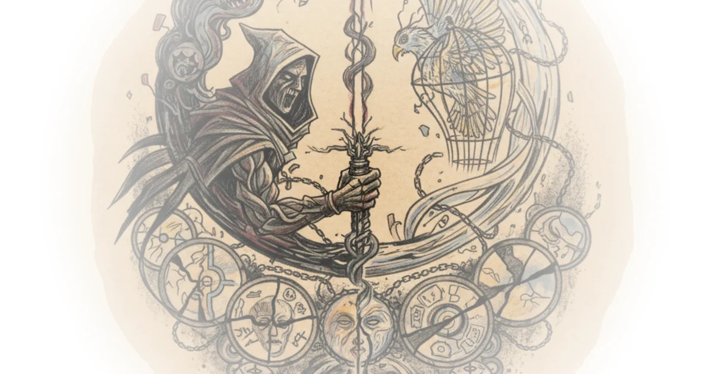

I went to cannes to see 2025’s most promising movies Tom van der Linden · Like Stories of Old ·May 27, 2025 · 17 min read · Writing & Craft
The strange psychology of the long take Tom van der Linden · Like Stories of Old ·Apr 15, 2025 · 16 min read · Writing & Craft
The most tragic movie of the decade Tom van der Linden · Like Stories of Old ·Mar 20, 2025 · 18 min read · Writing & Craft
Terence tao continuing history’s cleverest cosmological measurements Grant Sanderson · ·Feb 23, 2025 · 26 min read · Writing & Craft
The worst kind of sequel Tom van der Linden · Like Stories of Old ·Feb 21, 2025 · 24 min read · Writing & Craft
Why star wars can’t move forward Tom van der Linden · Like Stories of Old ·Jan 30, 2025 · 19 min read · Writing & Craft 
Movies i thought about while my wife was dying Tom van der Linden · Like Stories of Old ·Oct 31, 2024 · 30 min read · Writing & Craft
Naming and necessity by saul kripke - part 1 Jeffrey Kaplan · Jeffrey Kaplan ·May 9, 2024 · 22 min read · Writing & Craft
Why the planet of the apes just hits different Tom van der Linden · Like Stories of Old ·Apr 23, 2024 · 24 min read · Writing & Craft
Taylor swift and the lyric tradition Close Reading Poetry · Close Reading Poetry ·Mar 8, 2024 · 33 min read · Writing & Craft
Henry vaughan Close Reading Poetry · Close Reading Poetry ·Jan 17, 2024 · 14 min read · Writing & Craft
Poetry books that harvard literature students read in 1983 Close Reading Poetry · Close Reading Poetry ·Dec 18, 2023 · 48 min read · Writing & Craft
"Proper names" by john searle Jeffrey Kaplan · Jeffrey Kaplan ·Nov 30, 2023 · 28 min read · Writing & Craft
Lecture on shelley's ode to the West wind Close Reading Poetry · Close Reading Poetry ·Sep 20, 2023 · 33 min read · Writing & Craft
The irishman, and the death of gangster cinema Tom van der Linden · Like Stories of Old ·Sep 7, 2023 · 61 min read · Writing & Craft
On samuel johnson's the vanity of human wishes Close Reading Poetry · Close Reading Poetry ·Sep 7, 2023 · 16 min read · Writing & Craft
The last American gangster epic Tom van der Linden · Like Stories of Old ·Aug 31, 2023 · 50 min read · Writing & Craft
Goodfellas: The peak of gangster cinema? Tom van der Linden · Like Stories of Old ·Aug 24, 2023 · 54 min read · Writing & Craft
The godfather, and the birth of the modern gangster epic Tom van der Linden · Like Stories of Old ·Aug 11, 2023 · 51 min read · Writing & Craft
What is lost in the grand Budapest hotel? Tom van der Linden · Like Stories of Old ·Jun 16, 2023 · 53 min read · Writing & Craft
John stuart mill - one minor mistake Jeffrey Kaplan · Jeffrey Kaplan ·Jun 4, 2023 · 15 min read · Writing & Craft
How to analyze a poem Close Reading Poetry · Close Reading Poetry ·Mar 16, 2023 · 10 min read · Writing & Craft
What is poetry? Close Reading Poetry · Close Reading Poetry ·Mar 14, 2023 · 17 min read · Writing & Craft
The first 7 philosophy texts you should read Jeffrey Kaplan · Jeffrey Kaplan ·Dec 14, 2022 · 10 min read · Writing & Craft
The apocalyptic filmmaker that haunts my soul Tom van der Linden · Like Stories of Old ·Nov 30, 2022 · 29 min read · Writing & Craft
Nature of genius 114 definition for today Yale University · Yale Courses ·Nov 2, 2022 · 11 min read · Writing & Craft
The image you can't submit to journals anymore BobbyBroccoli · BobbyBroccoli ·Jul 22, 2022 · 30 min read · Writing & Craft
Semester ethics course condensed Jeffrey Kaplan · Jeffrey Kaplan ·Jul 14, 2022 · 17 min read · Writing & Craft
The twins who terrorized physicists with a sock puppet army BobbyBroccoli · BobbyBroccoli ·Oct 17, 2021 · 37 min read · Writing & Craft